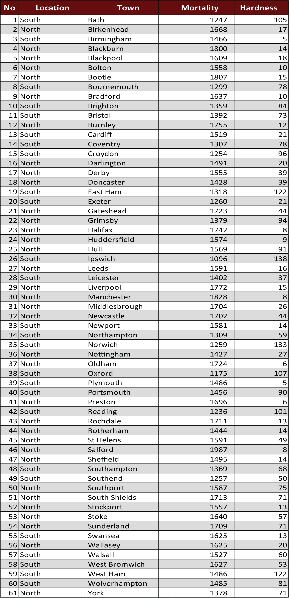

Linear Regression Model - Mortality Vs Water Hardness
in 61 Towns in England and Wales
Water helps almost every part of the human body to function efficiently. Considering the fact that our bodies are two-third water,
so it’s important to know the quality of the water we are drinking. People often think that the hard water is a hazard for health,
some people try to soften the hard water first and then drink it, because they think that the hard water is not healthy.
I used to work as a water supply engineer and have over 5 years experience in designing and implementation of community based
water supply networks.
As a graduate student in the advance quantaitive analysis class (Goeg-560), I decided to further analyze the relationship of hard water with human’s health using R.
In this project I have conducted some statistical analysis on water hardness and the mortality rates for 61 towns in England and Wales as listed in the below table.
The dataset for this project was taken from: Mortality and Water Hardness
Dataset Table
Methodology
In this project, first I conducted some descriptive analysis on each numerical variable to visualize and see their distribution over the space,
estimated the skewness of both numerical variables (Mortality, Hardness) to see whether they are skewed to the right or left and finally,
used the Pearson correlation and the Linear Regression equation for modeling the relationship between Mortality as a dependent variable and
water Hardness as an independent variable.
In addition to the linear regression model, I have also visualized the differences in mortality between
the northern and southern towns.
After conducting all the statistical analysis, I figured out that there is an inverse (negative) relationship (-0.654)
between the two numerical variables.
A negative correlation also demonstrates a connection between the two variables but in an inverse way. A negative correlation
means that one variable increase whenever the other decreases. This relationship may or may not represent causation between the two variables, but for sure it does describe a pattern.
Based on the linear regression model below, we can say that the mortality in 61 towns in England and Wale is not associated/caused by water hardness.
As explained above that
a negative relationship means that when one variable increases the other decreases and we can clearly see this in the below figure that when the water hardness
increases, the mortality rate decreases, so we might say that the water hardness have a positive effect in reducing the mortality.
Numerous studies suggest a correlation between hard water and lower cardiovascular
disease mortality, however no firm conclusions have been drawn yet. The National Research Council has
recommended further studies be conducted.